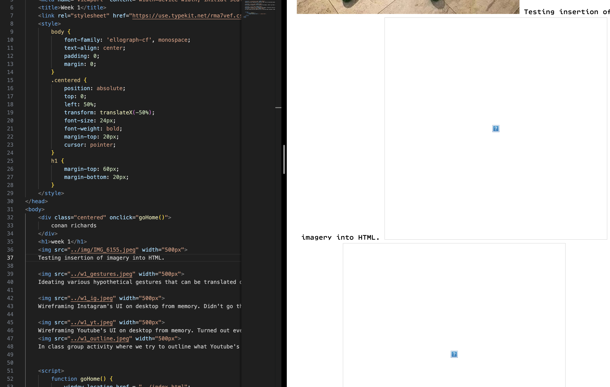
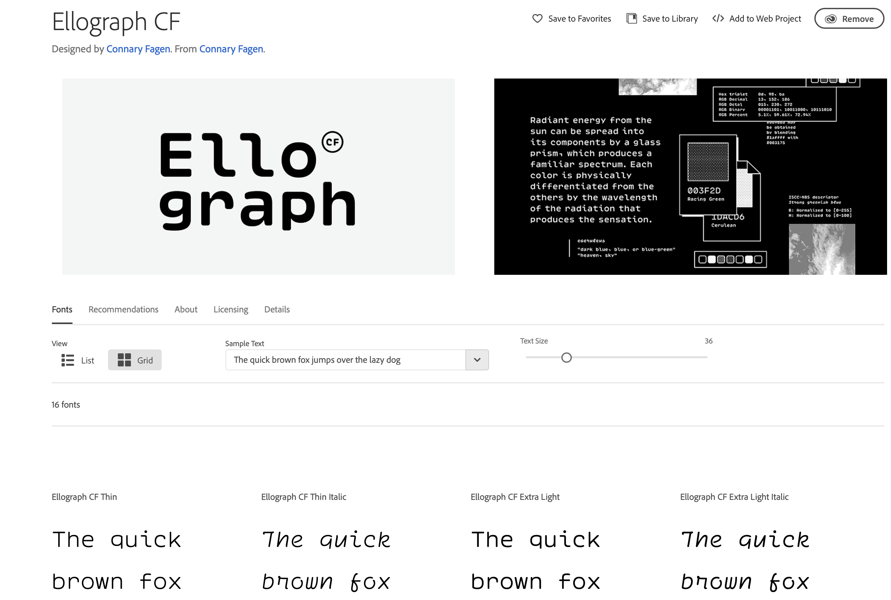
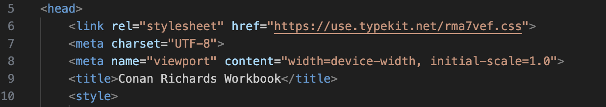
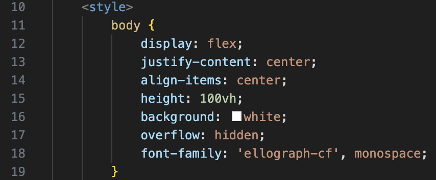
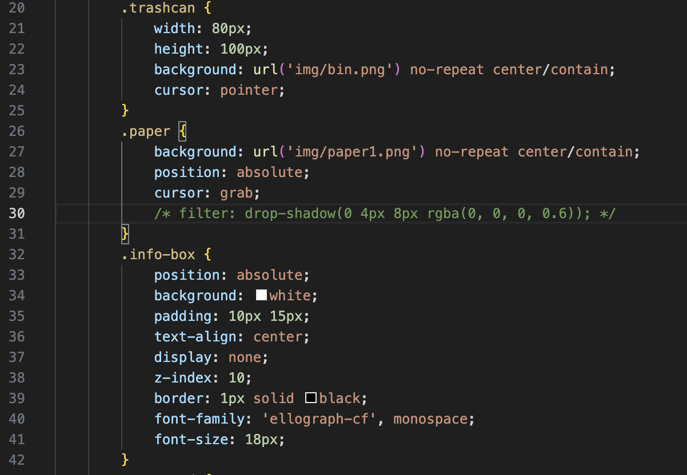
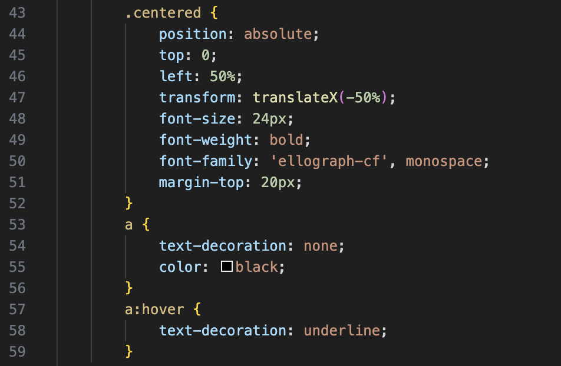
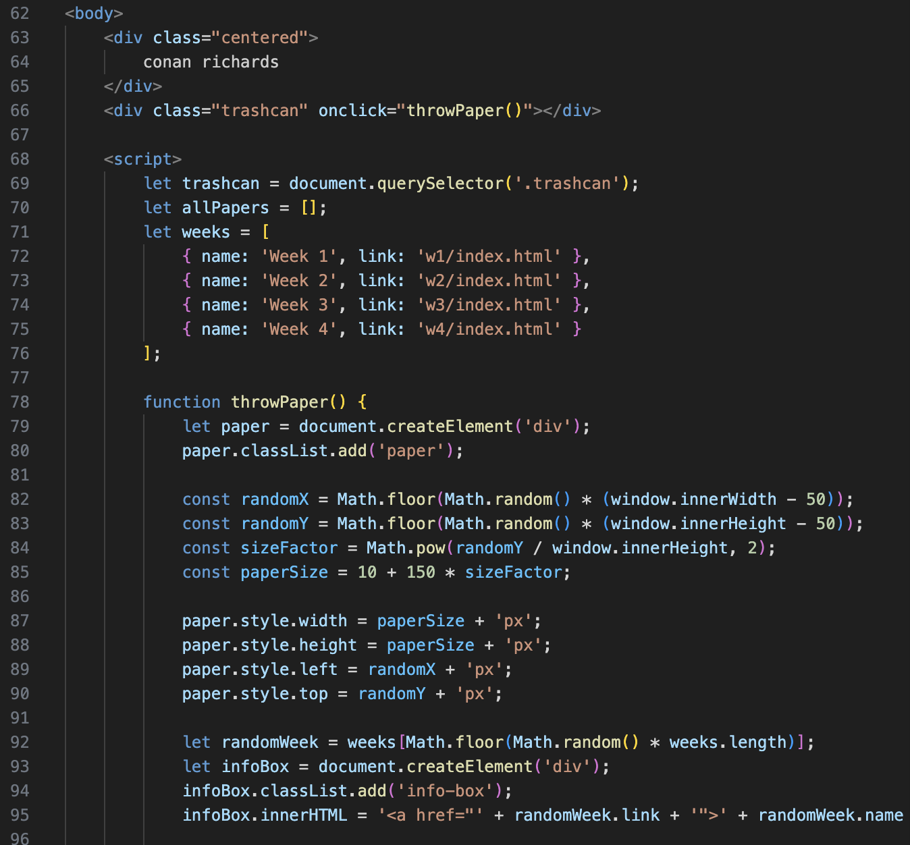
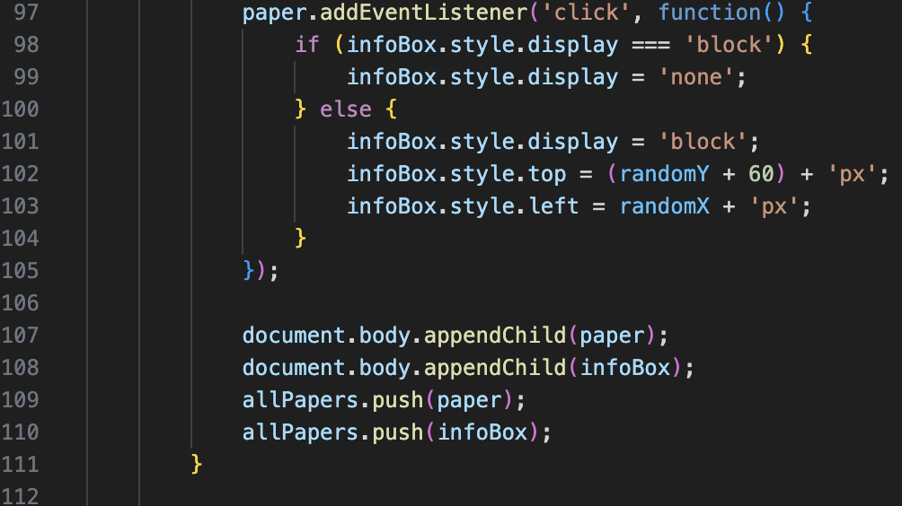
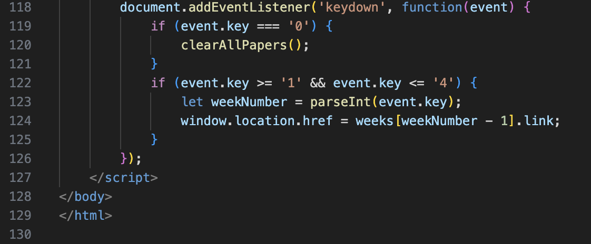
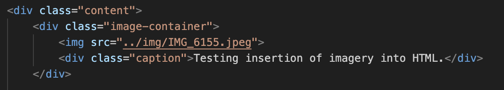

Fig. 1. Testing insertion of imagery into my workbook. I encountered an issue where the images wouldn't load. Resolved by adding one extra fullstop in the source to redirect to one folder before the current one. eg: ./img -> ../img

Fig. 2. My chosen typeface for my workbook. Ellograph is a monospace font which means that each character takes up the same amount of space on a grid. I chose it to reference the fact that code is written in monospace. I also think this one is quite cool.

Fig. 3. The header of my main HTML index file. The tag contains meta information and links that define how the page behaves and appears. The first line links to Ellograph, my chosen monospace typeface from Adobe Fonts. I specify UTF-8 encoding for character support and add a viewport meta tag to ensure mobile compatibility. The title tag sets "Conan Richards Workbook" as the browser tab title.

Fig. 4. Styling for the body. Uses flexbox to center content both vertically and horizontally. Sets the height to 100vh for full-screen coverage and a white background for a clean look. Uses Ellograph as the font to maintain a consistent coding aesthetic.

Fig. 5. Uses Ellograph for interactive elements. The trashcan has a fixed size and displays an image with a pointer cursor. The paper element uses an image with a grab cursor, positioned absolutely for free movement. The info-box is styled to appear on click, with a clean white background, center alignment, and a subtle black border.

Fig. 6. Styling for centered text and links. The centered element is positioned at the top center with bold, large text. Links are styled without underlines by default, but appear underlined on hover.

Fig. 7. Main interactive elements. Clicking the trashcan triggers the throwPaper() function, creating a paper element at a random position. The paper size varies by its Y-coordinate, creating a sense of depth. Each paper links to a random week from a stored list. Clicking the paper reveals an info box with a clickable week link.

Fig. 8. Event listener to add interactivity. Each paper has a click event listener that toggles the display of its info box. The paper and info box are stored in an array for easy removal and management.
Fig. 9. Clearing all papers with the clearAllPapers() function. Loops through the allPapers array to remove each element, then clears the array. Triggered by pressing the "0" key.

Fig. 10. Keyboard navigation feature. Pressing keys "1" to "4" redirects to the corresponding week page. Intended for quick navigation and debugging.

Fig. 11. Using divs for image and caption structuring. Keeps images and captions grouped consistently, like framing photos in a gallery.